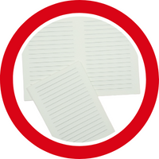
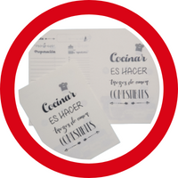

El repuesto incluye: 80 hojas impresas frente y dorso. Papel bookcel 80 grs. Contenido: caratula 2022, hoja de datos personales, calendario 2022, contraseñas, notas,etc.
El repuesto incluye: 40 hojas de papel bookcel. Medida A5 (14,5 X 20). Para cuadernos medida final A6 (queda un cuaderno de 80 hojas de 10 x 14,5 cm). Impresión: rayados, rayados con nombre, lisos con nombre.
Repuesto orgaznizador de viaje. papel bookcel de 80 grs. Medida 14x20 cm (a5). impresión a 1 color con diseño diario de viajes (datos personales, frases, preparativos, no olvidar, importante, destinos elegidos, etc.
Cada repuesto incluye: 40 hojas de papel bookcel impresas a un color (caratula recetario, hojas diseño recetas).frente y dorso, Medida A4 (29,7 x 21).